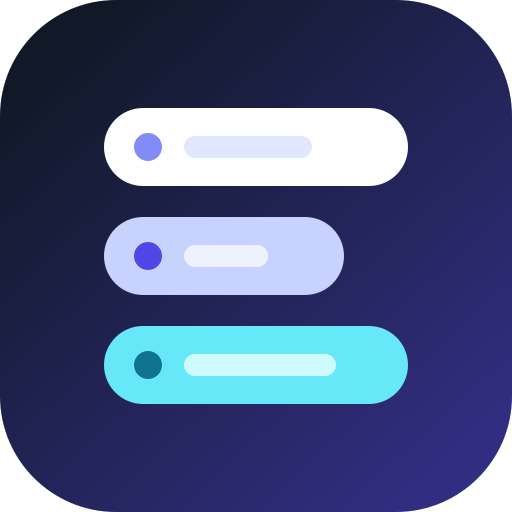
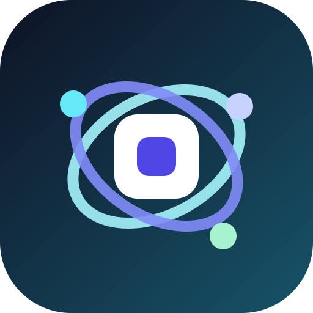
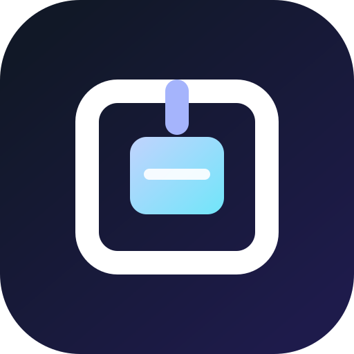
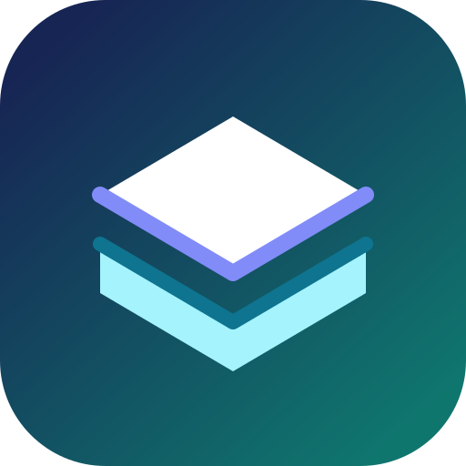
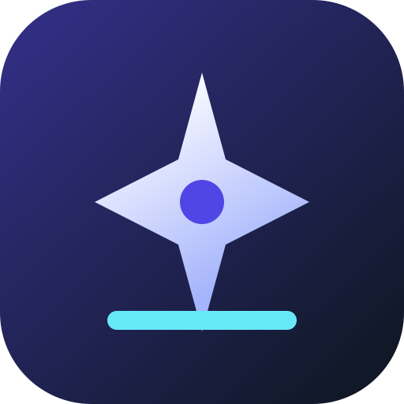

01 · Organized work
Dock
Three calm lanes for notes, files, and folders; practical and easy to recognize.

Workbench
These directions avoid a literal “W” and work as the same visual identity in both the home-screen/PWA icon and browser sidetab. The concept names are labels for comparison, not final product names.
Three calm lanes for notes, files, and folders; practical and easy to recognize.

A central workspace with related pieces moving around it; collaborative and modern.

An open container or portal; simple, calm, and especially strong in a small tab.

Overlapping surfaces suggest the app’s hierarchy of workspaces, folders, and documents.

A more energetic option for a product centered on decisions, ideas, and follow-through.

My strongest three are Dock for practical clarity, Frame for a premium/minimal feel, and Orbit for a more collaborative product personality.